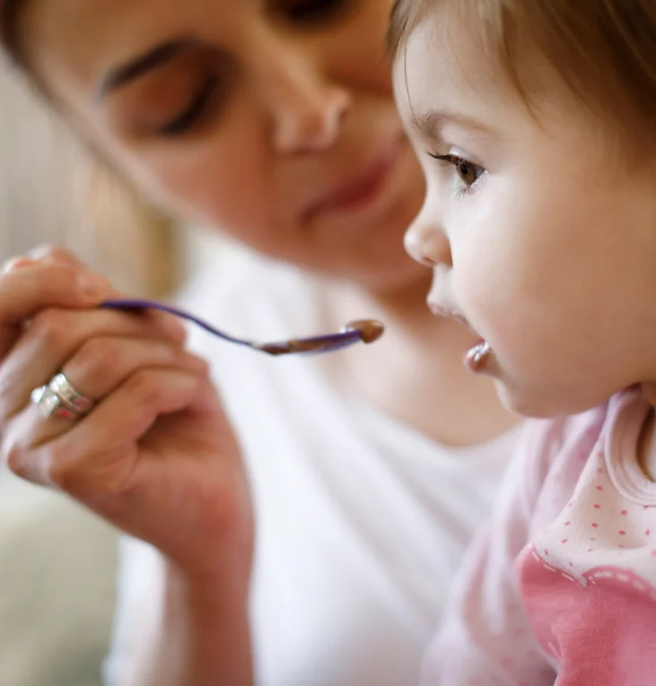
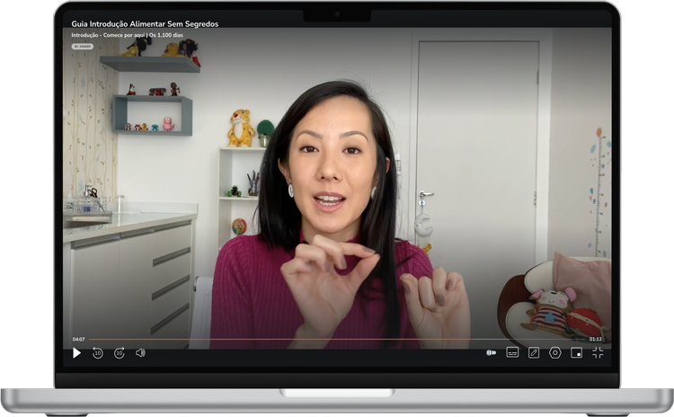
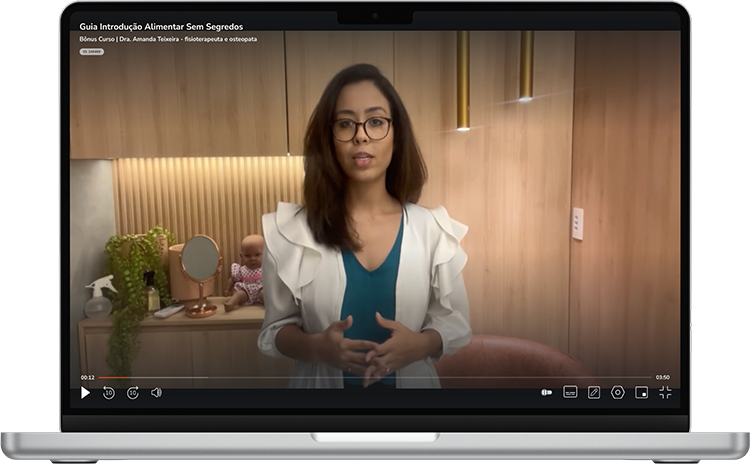
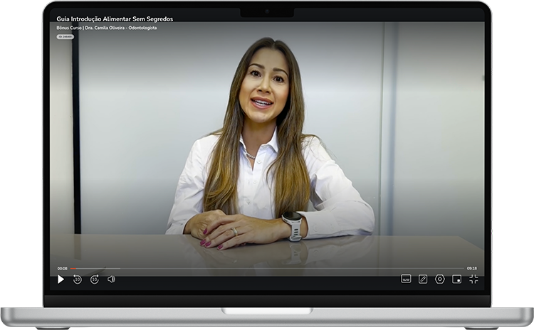

O passo a passo completo de introdução alimentar da nutricionista materno-infantil Cibely Ito — para você conduzir essa fase com segurança, praticidade e leveza.
Quero começar agora12x de R$19,70 · garantia de 7 dias
Ideal para mães de bebês de até 1 ano. Se você se reconhece em alguma dessas situações, este guia foi pensado para você:
Não sabe cozinhar, nem por onde começar, e sente que não tem apoio nessa jornada.
Tem medo de engasgo, de escolher os alimentos errados ou de o bebê rejeitar a comida.
Já viveu a seletividade alimentar na família e não quer que o bebê siga o mesmo caminho.
Aprenda a substituir alimentos e conduzir a introdução alimentar longe da família, com suporte.
Você não precisa estar perdida para estar aqui. Se você se interessa, pesquisa e quer fazer o melhor pelo seu bebê desde já, este guia entrega o caminho completo — organizado por quem estudou tudo isso por você.
Essas dúvidas são normais — e têm resposta. Eu te guio passo a passo em cada fase. 🤍
E a introdução alimentar está bem no coração dessa janela. O que você fizer agora, seu bebê leva para a vida inteira.
Aulas objetivas e legendadas, organizadas por fases, para assistir no seu ritmo — pensadas para mães que têm pouco tempo. Acompanha e-book de apoio com mais de 60 páginas, com tabelas e imagens.


Como cuidar da postura e do desenvolvimento do seu bebê durante a alimentação.
Valor: R$200
Como cuidar da saúde bucal do seu bebê desde o início.
Valor: R$200Ideias de lancheiras saudáveis e receitas simples para crianças a partir de 1 ano.
Valor: R$47Guia completo com mais de 60 páginas, com imagens, gráficos e tabelas de apoio.
Valor: R$47Receitas práticas e nutritivas para o dia a dia do seu bebê.
Valor: R$47Cecília Natucci, mãe da Olivia · Curitiba/PR
Lays Gama, mãe do Samuel · Campinas/SP
Bárbara Falqueto, mãe da Liz · São Paulo/SP
Geovana Shibuya, mãe da Elis · Foz do Iguaçu/PR
Veja tudo o que está incluído na sua inscrição:
Valor total: R$1.138 — mas hoje você paga apenas:
💳 Cartão em até 12x · ⚡ PIX · 📋 Parcelex
Eu confio tanto no meu método que a decisão fica 100% com você: entre, assista às aulas e, se em até 7 dias você achar que o guia não é para você, eu mesma devolvo cada centavo — sem complicações e sem perguntas.
Sou de Maringá (PR), formada em Nutrição em 2007, com duas pós-graduações: Nutrição Clínica e Nutrição Materno-Infantil. Me especializei também em Terapia Alimentar.
Atuo na área há mais de 17 anos, atendendo em clínicas e hospitais, onde tratei diversas comorbidades e distúrbios alimentares. Também trabalhei com nutrição enteral, fórmulas infantis especiais e suplementos alimentares, em empresas como Danone e Nestlé.
Em 2018 me mudei para São Paulo e passei a me dedicar à nutrição comportamental, com especializações em PNL e Constelação Familiar. Acredito que alimentação vai além da clínica: é preciso primeiro acolher, para depois tratar.
Minha missão é mudar a relação da nova geração de mães com a nutrição — para que a próxima geração de crianças veja a comida com mais leveza e amor. 🤍
Sim! O curso acompanha o bebê até os 12 meses, e o e-book de apoio traz orientações até os 18 meses. O conteúdo é organizado por fases — você começa direto na fase do seu bebê e ainda pode revisar as anteriores.
Sim. O método ensina os princípios por grupos alimentares, então você aprende a substituir os alimentos pelos disponíveis no seu país. Muitas alunas moram fora do Brasil.
O acesso é de 6 meses. Após esse período, você poderá renovar a matrícula para continuar com o acesso.
Sim, todas as aulas já estão no ar — você começa hoje mesmo.
Pela plataforma Hotmart, em qualquer dispositivo (TV, celular ou tablet), em qualquer lugar e a qualquer hora.
Clique em qualquer botão "Quero começar agora" desta página. Você será direcionada ao checkout seguro da Hotmart, preenche seus dados, realiza o pagamento e recebe o acesso à área de membros por e-mail.
PIX, cartão de crédito em até 12x de R$19,70 (ou R$197 à vista) e financiamento Parcelex.
Sim: garantia incondicional de 7 dias corridos após a inscrição. Basta solicitar o reembolso, que será feito sem questionamentos.
Conduza essa fase com segurança, sem medo e com o apoio de quem entende.
Quero começar agora 12x de R$19,70 · garantia incondicional de 7 dias